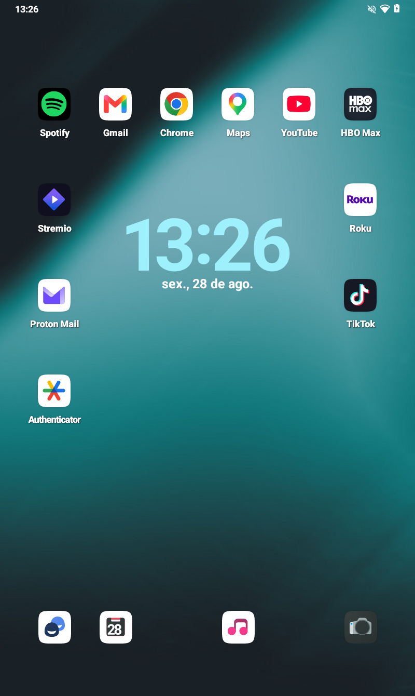
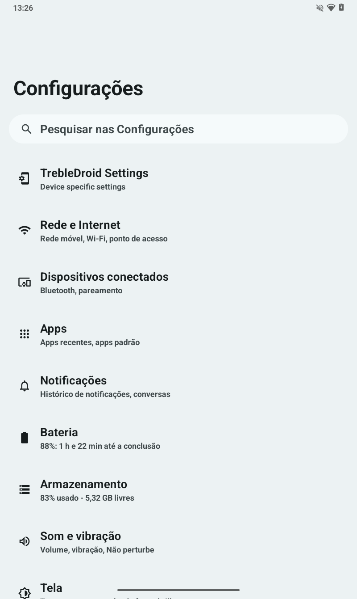
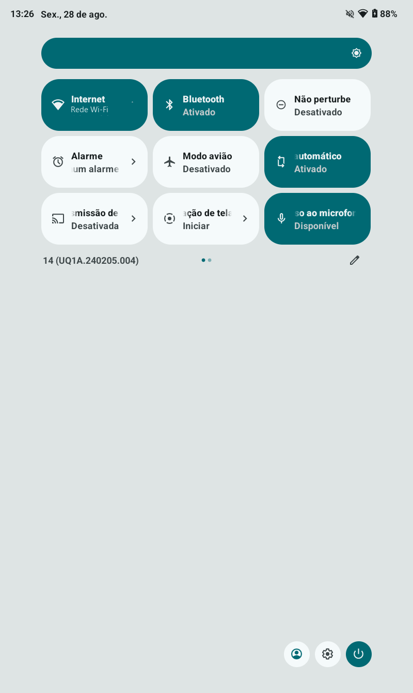
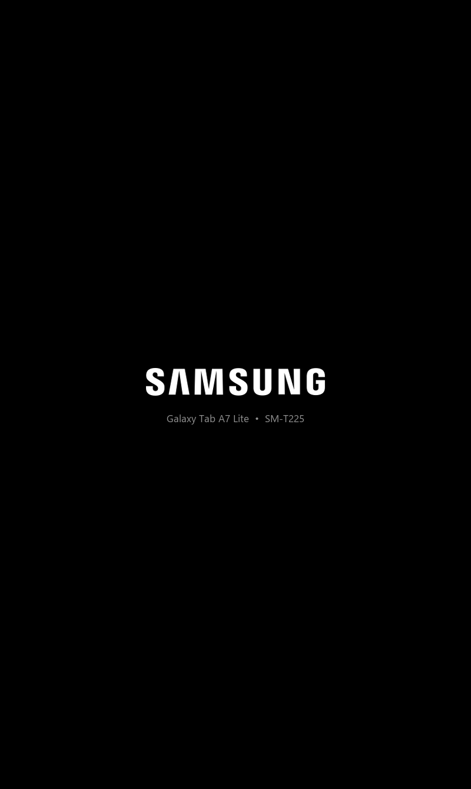

Uma GSI LineageOS 21 ajustada de ponta a ponta para um tablet de 3 GB — entregue como camada, não como imagem.
interface estilo iPad · layouts de tablet destravados · boot SAMSUNG contínuo

O que muda, em números
Tudo aqui foi medido no aparelho, antes e depois. Nada é estimativa.
Largura útil
582 dp→640 dp
acima do corte de 600 dp
Jank SystemUI
35,3%→15,7%
p90 de 350 ms para 44 ms
Tempo de boot
44,5 s→42,9 s
tela preenchida o tempo todo
Daemons Perfetto
2→0
residentes sem função
Taskbar de tablet
ativa
não existia antes
Animação de boot
1,95 MB→20 KB
quadro único, 99% menor
A descoberta que vale por todas
O painel tem 800×1340 com densidade física 213, mas o sistema carregava uma sobreposição de 220 dpi. Isso colocava a largura útil em 582 dp — logo abaixo do corte de 600 dp que o Android usa para decidir se um aparelho é tablet.
Dezoito dp custavam a taskbar, as Configurações em duas colunas e o comportamento de multi-janela. Baixar para 200 dpi devolve tudo isso, e o Launcher3 ainda migra sozinho para uma grade maior.
Capturas
tela inicial

configurações

painel rápido

boot
O boot, medido
A tela preta entre a splash da Samsung e a animação não era “alguns segundos”. O ro.boottime.* mostrou o tamanho real do problema — e uma surpresa: o surfaceflinger sobe 8,6 s antes de qualquer coisa ser desenhada.
A correção pinta a tela SAMSUNG direto em /dev/graphics/fb0 a partir do post-fs-data, e continua repintando até a bootanim assumir. Isso provou que o surfaceflinger, de pé mas sem nada para compor, não limpa o framebuffer.
A animação de 150 quadros custava 2,0 s. Removê-la de vez deixaria vinte segundos de tela preta, então virou um quadro estático da mesma tela: 78% do tempo de volta, com o painel aceso o caminho inteiro.
Instalação
Isto apaga o tablet e queima o fusível Knox de forma permanente. Samsung Pass e Pasta Segura param de funcionar e nunca voltam, em nenhum firmware. Nada neste projeto desfaz isso.
Desbloquear o bootloader pelo Device Unlock Mode.
Gravar o TWRP pelo Odin, com Auto Reboot desmarcado — é o passo que as pessoas pulam.
No TWRP: Format Data e gravar o desativador de FBE.
Gravar a GSI do LineageOS na partição System Image.
Instalar o Magisk.
Instalar os quatro módulos Sistema2D pelo app do Magisk.
Reiniciar e rodar aplicar-ajustes.ps1 — é ele que destrava os layouts de tablet.